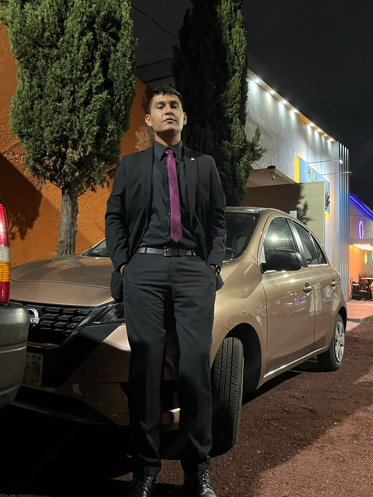

Acerca de mi
¡Hola! Soy Víctor Sánchez, tambien conocido como PsychoRaccoon, actual estudiante de la carrera de Software interactivo y videojuegos en la Universidad Amerike,
Tengo 19 años y disfuto demasiado hacer videojuegos, ya sea individualmente o en equipo. Se manejar el motor de juegos Unity y próximamente
Unreal Engine, también se usar Blender, más abajo puedes ver mis trabajos que he hecho tanto en Blender como en Unity.

Mis juegos
He realizado varios videojuegos en Unity, todos en 2D, pero espero proximamente poder empezar a trabajar con 3D,
todos han sido hechos en equipo y yo me he encargado casi exclusivamente de la parte de la programación, del movimiento de los personajes,
de las interacciones, de los menús, de las habilidades, etc. Aqui los links a mis juegos:
Animaciones 3D
Además de programar videojuegos, otra de mis grandes pasiones es la animación digital, desde muy pequeño me gusta la animación y aunque no es mi rama principal,
si no estuviera programando, ¡estaría haciendo animaciones! De todas formas disfruto mucho hacer animaciones en Blender, así que aquí hay una muestra de lo que he hecho:
Mi mejor creación (en desarrollo)
Actualmente estoy trabajando en mi videojuego "Wizarding Fight", un caótico juego multijugador (local pero si descubro como hacerlo online, será online)
en donde tu y tus amigos, luchan entre ustedes como poderosos magos que quieren apoderarse de un huevo de dragón. Este traabajo lo empecé yo solo, pero empezaré a trabajar
con mis compañeros con quiénes ya he hecho juegos antes.